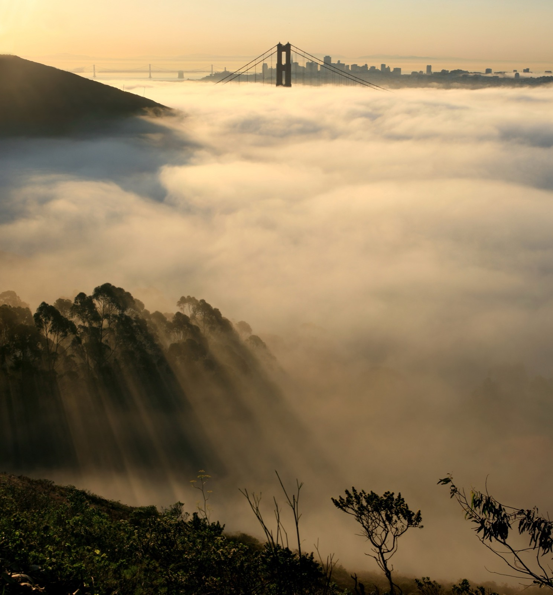
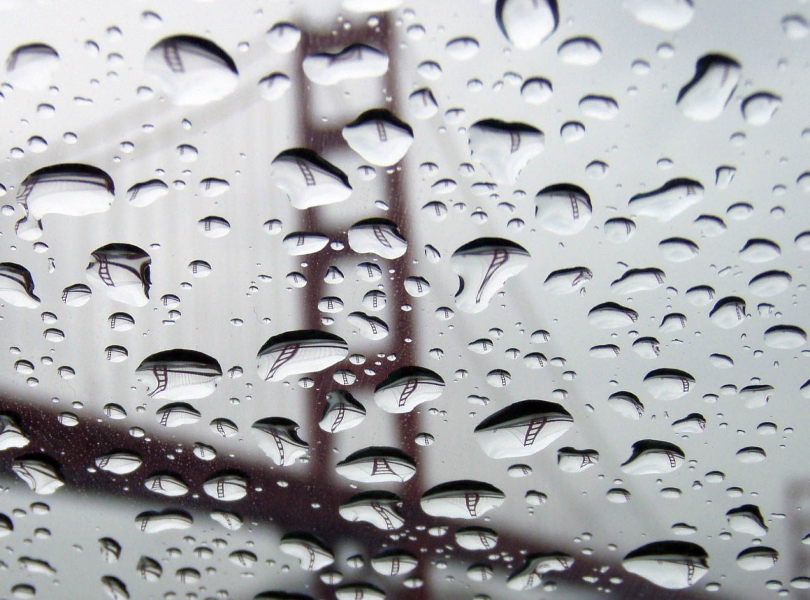

Pedestrian Day
Before any car, 200,000 people crossed on foot and on roller skates. Donald Bryan, a college sprinter, was first end to end.
Drawn by arithmetic, under the sun, moon, fog and tide that are over it right now.
Drag the picture to walk around the bay.
Hold a chain by its ends and it sags into a catenary. Hang a flat, even road from it and the curve turns into a parabola. The Golden Gate's main cable carries the road, so it is the parabola.
y = 470 × (x ÷ 2,100)²
Reading it: x is how far you are from the middle, in feet. At a tower x is 2,100, so the cable is 470 feet higher there than at mid-span. Halfway to a tower it is a quarter as high: 117.5 feet.
y = a (cosh(x ÷ a) − 1)
Reading it: a is the sideways pull divided by the chain's weight per foot. cosh grows slowly near the middle and fast near the ends, so a bare chain hangs a little fuller at the shoulders.
H = w L² ÷ (8 d)
Reading it: the sideways pull H equals the weight per foot w, times the span L squared, divided by eight times the dip d. Double the dip and the pull halves. That is why the towers are tall.
The side spans hang from the same pull, so their dip scales with span squared: 470 × (1,125 ÷ 4,200)² = 33.7 feet. The picture at the top uses it.
Irving Morrow picked the colour because it sits warm on the hills and stands out from the sea and sky.
In 1872 Lord Kelvin built a brass machine that predicted tides by adding up turning wheels. Here are eight wheels for the water under the Golden Gate, fitted to NOAA's prediction for its gauge at the Presidio, about 2 km from the south tower.
Line: the wheels. Blue dots: NOAA's prediction. Black dot: the water NOAA measured last.
The bottom of the deck at mid-span is 220 feet above average high water. The tide adds or takes away a few feet, twice a day.
Three ships brought giant cranes from China to the Port of Oakland: 223.75 feet tall in 2000 (about 8 feet to spare), 227.7 feet in 2002 and 2005 (12 and 9–10 feet). In 2010 the Zhen Hua 15 stopped in Drakes Bay to lower cranes that stood 253 feet.
Charles Ellis drew a steel arch over the 1861 fort so nobody had to tear it down.
Air turns to fog when it cools to its dew point, the temperature at which it can hold no more water. Wet Pacific air blowing over the cold California Current does that at sea level.


Five horns, switched on by hand when fog comes in under the road: about two and a half hours a day over a year, less than half an hour a day in March, five hours and more in summer. The two at the south tower blast together for 2 seconds every 20. The three at mid-span give two 1-second notes, 2 seconds apart, then wait 36 seconds. Ships coming in keep left of the tower horn and right of the mid-span horns.
The timing is the District's; the pitches here stand in for the real ones.
Warm, wet ocean air rides in over cold water and turns to cloud at sea level.
In 2020 new slats on the west railing let the bridge stand 100 mph winds. When the wind passes 22 mph, the slats hum. A recording held four notes: 354, 398, 439 and 481 hertz, which are F, G, A and B.
f = 0.2 × U ÷ d
Reading it: wind at speed U flowing past an edge d wide sheds a swirl off one side, then the other, f times a second. The 0.2 is the Strouhal number, close to the same for most blunt edges. Swirls at the right rate shake a slat at its own note, and it rings.
Yes. The District paints the bridge continuously, and says so: not end to end each year, not once every seven years, but wherever inspections find rust coming through. Salt in the fog eats steel. The crew is 28 painters, 5 painter laborers and a chief bridge painter, with 13 ironworkers and 3 pusher ironworkers who replace rusted steel and rivets.
Tap the rust to patch it.
The steel arrived from Pennsylvania and New Jersey coated in red lead primer. Irving Morrow, riding the ferry to work, liked it on the rising towers. He tested black, grey and aluminum; warm grey came a distant second. The Navy asked for black and yellow stripes. Try them all; the bridge at the top of the page changes too.
C 0 · M 69 · Y 100 · K 6
The District publishes its mix for anyone to use. On a screen: red = 255 × (1 − 0) × (1 − 0.06) = 240, green = 255 × (1 − 0.69) × (1 − 0.06) = 74, blue = 255 × (1 − 1) × (1 − 0.06) = 0. That is #F04A00, the orange on this page. The nearest paint off the shelf is Sherwin-Williams Fireweed, SW 6328.
Work began on 5 January 1933. Cars crossed on 28 May 1937.
Steel grows about 12 millionths of its length for each degree. A longer cable hangs lower, so a warm afternoon lets the middle of the bridge down and a cold night pulls it up.
Δd = (3 S ÷ 16 d) × ΔL
Reading it: for a shallow parabola of span S and dip d, lengthening the cable by ΔL deepens the dip by 3S ÷ 16d times as much. Here 3 × 4,200 ÷ (16 × 470) = 1.68, so every foot of stretch drops the middle 1.68 feet.
The toy counts the cable's stretch only. Traffic, wind and the towers' own lean add to it.
US Navy aircraft carriers pass beneath the unfinished bridge, six months before it opened.
Each main cable is 61 bundles of about 452 wires, 27,572 wires in all, each 4.9 mm thick. Laid end to end, the wire in both cables runs 80,000 miles: 3.2 times around the equator. It was spun in place by shuttles running back and forth like a loom, in 6 months and 9 days.
Red lamps top the towers and trace the cables, for aircraft. Green and white under mid-span, for ships.
Before any car, 200,000 people crossed on foot and on roller skates. Donald Bryan, a college sprinter, was first end to end.
The officials' motorcade passed three ceremonial barriers. The last was a row of beauty queens, who made Joseph Strauss hand the bridge over before they let him through. At noon, President Roosevelt pressed a button in Washington and the cars began.
Edward Bullard of San Francisco had made a 'Hard-Boiled Hat' of steamed canvas and glue for miners. He adapted it for the bridge crews.
A net hung under the work caught 19 men, who named their club for how far they had fallen. On 17 February 1937 a scaffold broke through the net and ten men died.
Captain John Frémont named the strait for Istanbul's Golden Horn: Chrysopylae, Golden Gate. The bridge is orange; the gate is the water.
For the 50th birthday about 300,000 people crowded onto the deck at once, and the gentle upward arch of the main span flattened out under them. It was built to flex that way.
A young deer bounded the whole span, zipped through a FasTrak lane, took the 19th Avenue exit and vanished into the Presidio. Two more crossed in the evening commute in 2014.
A six-foot ostrich broke out of a cargo van and stopped traffic both ways while people ran for their cameras.
A dazed pelican landed on the roadway. Bird rescuers named her G.G. and let her go a month later.
Engineering students from the University of British Columbia, keeping their tradition of hanging something large from something famous, dangled a Volkswagen Beetle off the side.
Ten days after the Loma Prieta earthquake broke the Bay Bridge, 162,414 vehicles crossed the Golden Gate. It came through undamaged.
Joseph Strauss set a brick from his old university's demolished McMicken Hall into the south anchorage before the concrete went in.
Open data and free-licence work from these, credited where it appears; the page's own code is on GitHub.